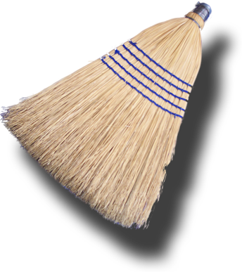

View and Edit HTML Source
You can view and edit the HTML Source by following the steps below.
-
Make the HTML Source view active by clicking
within it or pressing the Tab key until it is selected.
-
The HTML Source pane is a standard Mac OS X text editor.
-
You can observe the effects of your edits to the Tidy’d document in the
Tidy’d HTML pane and in the
Tidy Messages table.